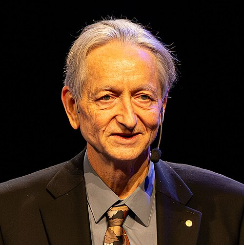

Introduction to deep learning and Pytorch*#
Deep learning refers to the use of multi-layered neural networks, a field significantly advanced by Geoffrey Hinton, who was awarded the Nobel Prize in Physics in 2024 for his foundational contributions.

Deep learning is widely applied in both research and everyday life, including computer vision (CV), such as facial recognition and autonomous driving; natural language processing (NLP), such as machine translation and chatbots; time series forecasting, such as demand forecasting and financial risk prediction; speech recognition, such as digital assistant Siri; Bioinformatics, such as gene and protein expression, etc.
flowchart TD
A(Deep Learning) --> B("Computer Vision (CV)")
A --> C("Natrual Language Processing (NLP)")
A --> D(Time Series Forecasting)
A --> E(Speech Recognition)
A --> F(Bioinfomatics)
A --> G(...)
Pytorch is an open-sourced deep learning libarary originally developed by Meta. It provides a high level API that helps building deep learing algorithms and architectures easily.
Think of its high-level API as a set of “ready-to-use building blocks” —— it hides the messy details so you can focus on easily designing and assembling powerful AI models.
Other major deep learning libraries include:
TensorFlow (Google’s industry-standard for large-scale production).
JAX (Google’s high-performance framework designed for cutting-edge numerical computing)
MXNet (Amazon).
…
Tensor#
In deep learning, tensors are the fundamental building blocks of data. As multidimensional arrays of numbers, they generalize scalars, vectors, and matrices.
0D Tensor: a scalar (a single number, like 5).
1D Tensor: a vector (a list of numbers, like [1, 2, 3]).
2D Tensor: a matrix (a table of numbers with rows and columns).
3D+ Tensors: data with more dimensions (like a color image with Height, Width, and Color Channels).
While similar to NumPy arrays, tensors are specifically designed to support automatic differentiation and GPU acceleration.
Automatic differentiation works like a smart calculator that remembers every math step performed during a computation. As tensors go through operations such as addition or multiplication, PyTorch keeps track of how each result was produced. Later, when training a neural network, PyTorch goes backward through these recorded steps to figure out how much each tensor contributed to the final result. These contributions, called gradients, are automatically calculated and stored in the tensor’s
.gradfield, so the model knows how to adjust its parameters to improve performance.Deep learning involves millions of small mathematical operations, such as multiplying numbers together. Without a GPU (Graphics Processing Unit), the CPU (Central Processing Unit) must handle these computations alone. Although modern CPUs are fast, processing millions of operations still takes considerable time. GPUs are specifically designed to perform many of these small computations simultaneously. As a result, a task that might take a CPU an hour could be completed by a GPU in just a few seconds.
Creation#
The following functions are used to initialize tensors from scratch or existing data.
torch.tensor(): creates a tensor from data (like a list or NumPy array).
import torch
data = [[1, 2, 3], [4.2, 5 ,6]]
torch_data1 = torch.tensor(data) # from a list
print(torch_data1)
print(torch_data1.dtype) # get the data type of a tensor
tensor([[1.0000, 2.0000, 3.0000],
[4.2000, 5.0000, 6.0000]])
torch.float32
import numpy as np
np_data = np.ones((2, 3))
torch_data2 = torch.tensor(np_data)
print(torch_data2)
tensor([[1., 1., 1.],
[1., 1., 1.]], dtype=torch.float64)
Note
When converting a NumPy array to a PyTorch Tensor, PyTorch inherits NumPy’s default floating-point precision float64. However, it is better to use the data type float32 in deep learning for faster computation.
Use the
.float()method to cast a tensor to the float32 data type.
torch_data2.float().dtype
torch.float32
Create with random or sequence values by
torch.zeros(),torch.ones(),torch.randn(),torch.arange()ortorch.linspace().
shape = (3, 2)
torch.zeros(shape)
tensor([[0., 0.],
[0., 0.],
[0., 0.]])
torch.ones((1,3))
tensor([[1., 1., 1.]])
torch.randn((2,1)) # returns a tensor filled with random numbers from a normal distribution (mean 0, variance 1)
tensor([[-0.2545],
[-0.0702]])
torch.arange(2, 20, 2) # torch.arange(start, end(exclusive), step) returns a 1D tensor with a range of values
tensor([ 2, 4, 6, 8, 10, 12, 14, 16, 18])
torch.linspace(2, 20, 3) # torch.linspace() torch.linspace(start, end(inclusive), steps) returns a 1D tensor of steps equally spaced points between start and end
tensor([ 2., 11., 20.])